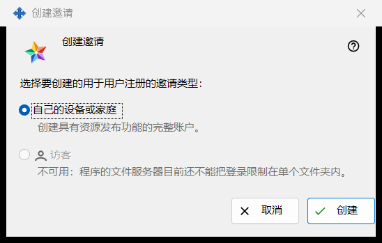
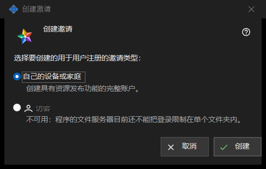

创建邀请
用途说明
这个小窗口询问新邀请将创建哪种账户。可在交换服务器设置的「邀请」组中点击「创建邀请..」打开；管理器连上服务器后才会显示该组。


操作顺序
- 在交换服务器设置中找到「邀请」组，点击「创建邀请..」。
- 保持选中「自己的设备或家庭」。
- 点击「创建」。
- 「邀请已创建」窗口随即打开并只显示一次代码：请在那里复制。点击「取消」或按 Esc 可退出而不创建任何内容。
界面元素
邀请类型
问题「选择要创建的用于用户注册的邀请类型：」下有两个单选按钮。「自己的设备或家庭」默认选中，其下一行写着：「创建具有资源发布功能的完整账户。」使用邀请的人会注册自己的登录名和密码。
创建
「创建」向服务器请求一个一次性邀请。成功后，设置页面会显示「邀请已成功创建。」，并打开显示代码的窗口。如果服务器拒绝，原因会显示在页面上，代码窗口不会打开。列表按类型、创建时间、状态和哈希显示每个邀请，绝不显示其代码。
撤回邀请
要取消已创建的邀请，请在列表中选中它并点击「撤销」。确认后，其代码即停止生效。
取消
「取消」或 Esc 会关闭窗口，不创建任何内容。